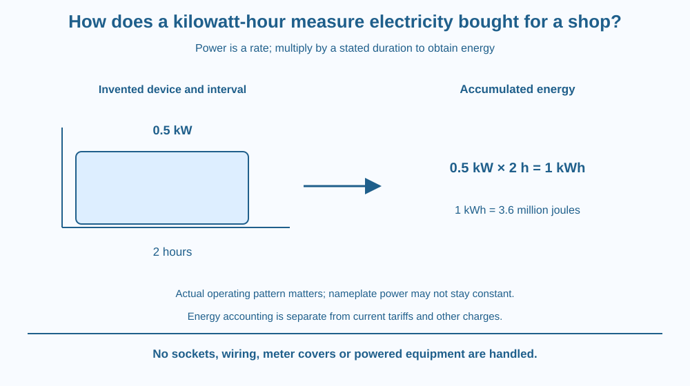

Calculate electrical energy from power and operating time. Distinguish watts, kilowatts and kilowatt-hours, then interpret a simple shop-use table. Keep energy consumption separate from an actual electricity bill's prices and other charges.
A shopkeeper sees kW on an appliance description and kWh in an energy record. The symbols look similar, but they do not describe the same quantity.
Power is a rate of energy transfer. Energy accumulates while equipment operates. A modest power used for a long time can therefore consume more energy than a larger power used briefly.
The useful question is not merely which appliance has the bigger printed number. It is how much energy the device actually transfers over the relevant operating period.
Power is energy transferred per unit time. One watt equals one joule per second, and one kilowatt equals 1,000 watts. A power rating describes a rate under specified conditions, not a stored amount of energy.
For constant or appropriately averaged power, energy = power × time. If power is in kilowatts and time in hours, the energy unit is kilowatt-hour, written kWh.
An invented 0.5-kilowatt appliance operating at that power for two hours uses one kilowatt-hour. This is an arithmetic example, not a measured shop appliance or a promise that any device always draws its label rating.
One kilowatt-hour equals 3.6 million joules: 1,000 joules per second multiplied by 3,600 seconds. The hour is part of the energy unit. A kilowatt-hour is not a kilowatt per hour.
If power changes during operation, use appropriate interval values or an actual integrated energy measurement. A refrigerator or other cycling device cannot necessarily be modelled as drawing maximum rated power continuously. We do not repeat its cooling mechanism here.
For several devices, calculate the energy contribution of each over a defined period and add them. Keep watts-to-kilowatts conversion consistent. A table using watts directly with hours produces watt-hours unless the result is converted.
A meter's accumulated energy reading differs from an instantaneous power reading. The difference between suitable start and end energy readings gives consumption over the interval, subject to the meter and reading conditions.
An actual bill can include tariffs, fixed charges, taxes or other items depending on the applicable system. This lesson supplies no current price or financial recommendation. It explains the energy unit so a reader can distinguish consumption from the separate rules used to calculate payment.
Draw a flow rate entering an energy counter. The rate label is kW; the counter's accumulated total is kWh. The longer the same flow continues, the more the counter increases.
Make two rectangles with different power heights and time widths. Compare their areas as energy contributions. This connects the unit multiplication with a visible accumulation model rather than treating kWh as an arbitrary billing word.
Then add a separate price-and-charges box after the energy total. That separation prevents the lesson from silently converting a physical calculation into a claim about every shop's actual bill. The energy result and payment result need different information.
The SVG shows an invented 0.5 kW input maintained for two hours and an accumulated one-kWh result. A unit ladder converts watts to kilowatts and hours to the energy calculation.
A second comparison shows lower power over longer time and higher power over shorter time. It is qualitative unless values are explicitly supplied. The graphic includes a separate billing-rules box with no prices.
The diagram contains no household wiring or socket instructions. It focuses on energy accounting and meter interpretation rather than the earlier current-flow or domestic-circuit mechanisms.

Indian shops and homes often discuss electricity consumption in units associated with kWh. Understanding the physical quantity helps a person read usage information without confusing a rate with a total.
A device's actual operating pattern matters. A lamp run for the whole evening and a machine used briefly can contribute differently even if their nameplate powers suggest the opposite ranking at first glance.
Do not open a meter, touch wiring or connect a device for this lesson. Use supplied data or an already available safe record with adult permission. Current billing rates and rules should be checked from the applicable provider if needed for a separate practical calculation.
Use paper, a pencil and fictional appliance records.
Label the data invented. Do not infer real appliance efficiency or monthly charges from the exercise. If a power varies, state the averaging assumption rather than treating a maximum rating as a guaranteed constant draw.
Can a lower-power device use more energy than a higher-power one? Give a time condition using the product rather than answering from power alone.
Now imagine two accumulated meter readings but no time record. What can their difference establish, and what is still missing for an average-power calculation? Energy and rate require related but distinct information.
What does a kilowatt-hour measure?
Answer: B — Power multiplied by time gives energy, so kWh is an energy unit.
Why is a power label insufficient to rank energy use?
Answer: C — Energy depends on rate over time rather than the power number alone.
An invented device uses 0.5 kW for 2 hours. What energy results?
Answer: A — Multiplying half a kilowatt by two hours gives one kilowatt-hour.
Design a fictional shop-use sheet with device, average power, duration, energy and assumptions. Include a total for one clearly defined interval.
Add a correction to the phrase kilowatt per hour when someone means kWh. Keep billing prices separate and avoid inventing a current tariff. Your sheet should support a physical energy comparison without requiring any contact with electrical installations.
A small rate repeated for long enough can outweigh a large rate used briefly. This is why a power label alone cannot rank energy consumption. The time dimension turns an instantaneous description into an accumulated quantity and explains the otherwise confusing extra hour in kWh.
Kilowatts measure power, while kilowatt-hours measure accumulated energy; multiply a suitable power by operating time before discussing separate billing rules.